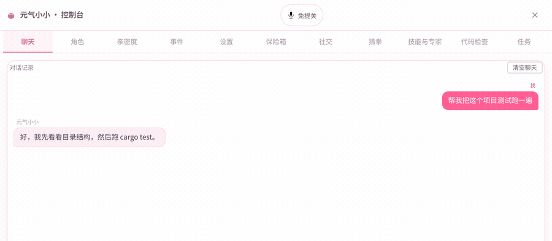
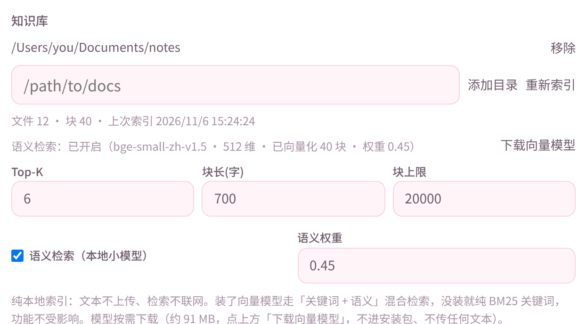
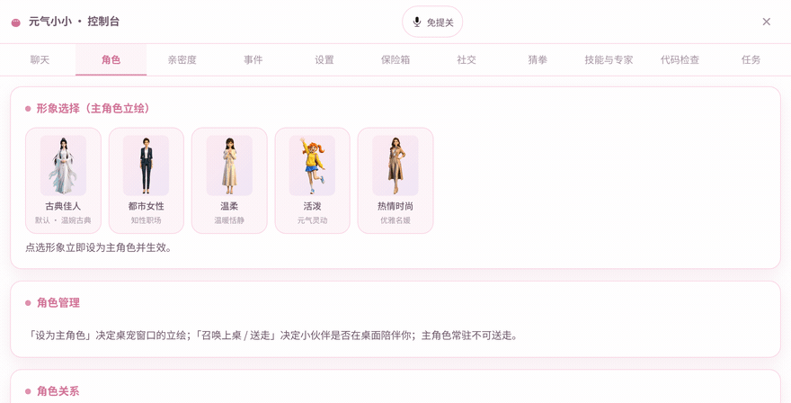
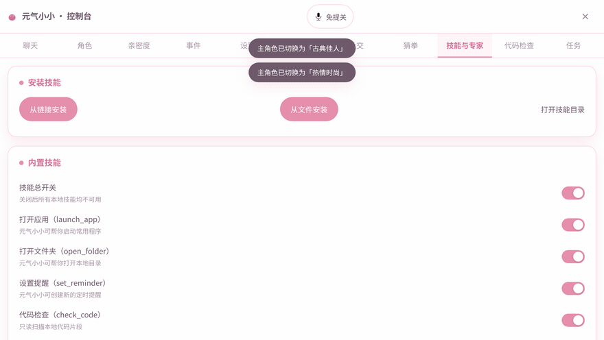
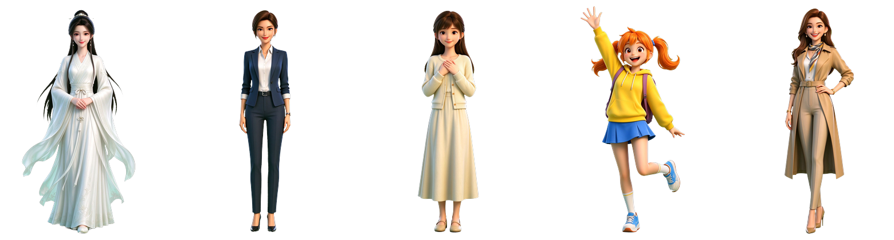
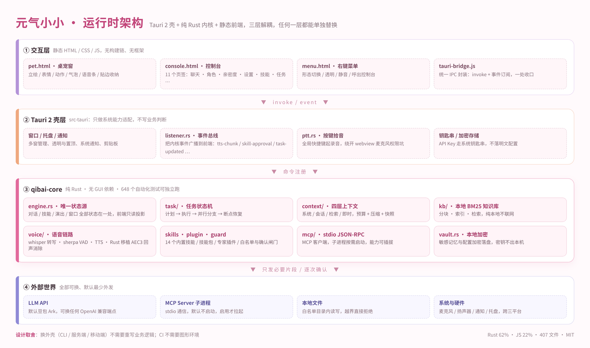

An AI companion
in the corner of your desktop
It chats · It listens · It remembers · It acts.
Local-first: indexing and speech run on your machine, and the text never leaves it.

It is not "a chat window with a new skin"
Chatting, listening, remembering and acting each have their own implementation behind them — not an API wrapped in a popup.
A stateful desktop pet
Five characters with their own look, personality, intimacy and voice; expressions and motions driven by structured model output; it shows up on its own when you have sat too long, skipped water, or need to rest your eyes.
Speech really runs on your machine
Local whisper transcription, audio never leaves the machine; say the wake word for hands-free mode and VAD splits sentences; barge-in supported, so you can talk while it speaks.
It finishes the job for you
14 built-in skills: scaffold projects, read/write files, run tests, check code, search the web, launch apps; risky operations are confirmed one by one — no confirmation, no execution.
Context that never blows up, tasks that resume
Four-layer context + token budget + auto compaction + snapshots; long tasks propose a plan first, can be paused and resumed, run in parallel along a dependency graph, and can be re-run from a given step.
Capabilities grow from outside
Skill packs install from a zip, expert plugins swap persona and tool whitelist, standard stdio MCP, and custom connectors you add with a single entry in the console.
Off by default, refused out of bounds
File operations stay inside whitelisted directories; commands and writes are approved per action and recorded; screen capability is off by default and its actions must be triggered by your voice or your click.
Knowledge base: from "searchable in a panel" to "actually used in conversation"
Directory-level indexing + chunking + BM25; add one 512-dim local vector model and it upgrades to hybrid keyword + semantic retrieval.

- Ask "why is my computer so slow"and it still hits the passage that says "the machine runs slower and slower" — because of semantics, not literal matching.
- Index once, cite automaticallyHits are handed to the model during conversation; weakly related chunks are filtered out by a threshold, so no dilution.
- Works without the model tooPure BM25 keyword retrieval, no downgrade in function; the model is about 91 MB and downloads in-app with one click.
- Never leaves the machineIndexing, embedding and retrieval all run locally — not a single byte of text goes out.
Interface footage
These are not design mockups — they were recorded from the rendered front-end pages.



Architecture
Shell and kernel fully separated: all business logic lives in one Rust crate with no GUI dependency, so changing the shell costs no rewrite.

A pure-Rust core
qibai-core has zero GUI dependencies and 665 tests that run without a graphics environment (3 ignored; 7 speech cases pass once fetch_resources.sh fills in the local speech bundle); Tauri today, CLI or a server tomorrow — not one line of logic changes.
One source of state
Conversation, tasks, performance and window state all live in the engine; the front end only reads a projection, so there is no "two copies drifting apart".
Minimal outbound by default
MCP ships with an empty config, so no subprocess starts; only conversations you explicitly trigger send the necessary text to the LLM, with your own key.
Quick start
The repo ships no model weights and no artwork frames (size and licensing), so pull them from upstream official releases with the scripts.
Prerequisites
Rust 1.75+ and Git; on Linux you also need webkit2gtk 4.1 and related system libraries, on macOS the Xcode command line tools, on Windows the MSVC toolchain.
Fetch the large resources
Models, the STT binary and the five characters' artwork and motion frames are all kept out of the repo; two scripts cover each side and are idempotent.
# Models and speech binaries bash fetch_resources.sh # Character artwork and motion frames (3 volumes → md5 → concat → extract) bash fetch_personas.sh
Test / build
# Core library unit tests cargo test -p qibai-core # Build cd src-tauri && cargo build --release # Package an installer (needs cargo-tauri) cargo tauri build
Enter your API key
On first launch, open the console → Settings and enter your LLM API key (Doubao Ark by default, or any OpenAI-compatible endpoint). The key stays local and never reaches the logs.